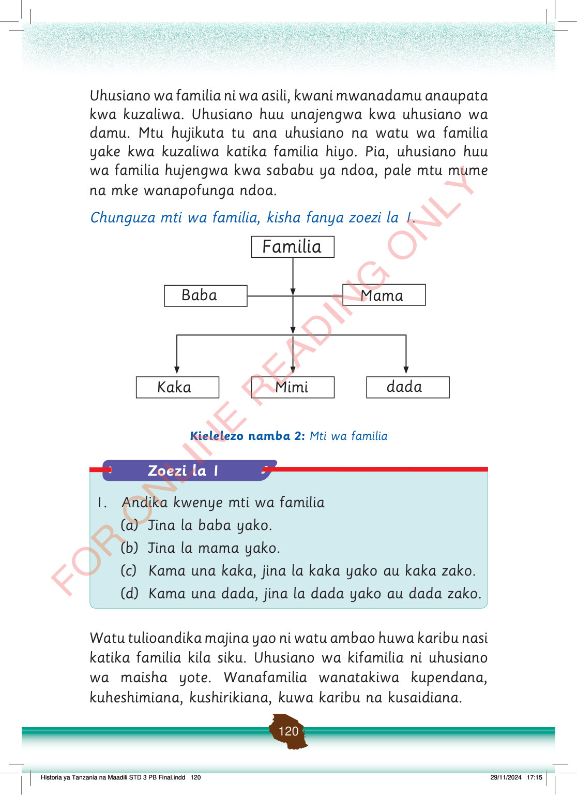

Uhusiano wa familia ni wa asili, kwani mwanadamu anaupata kwa kuzaliwa.
Uhusiano huu unajengwa kwa uhusiano wa damu.
Mtu hujikuta tu ana uhusiano na watu wa familia yake kwa kuzaliwa katika familia hiyo.
Pia, uhusiano huu wa familia hujengwa kwa sababu ya ndoa, pale mtu mume na mke wanapofunga ndoa.
Chunguza mti wa familia, kisha fanya zoezi la 1.
Familia
Baba
Mama
Kaka
Mimi
dada
Kielelezo namba 2: Mti wa familia
Watu tulioandika majina yao ni watu ambao huwa karibu nasi katika familia kila siku.
Uhusiano wa kifamilia ni uhusiano wa maisha yote.
Wanafamilia wanatakiwa kupendana, kuheshimiana, kushirikiana, kuwa karibu na kusaidiana.
Historia ya Tanzania na Maadili STD 3 PB Final.indd 120
29/11/2024 17:15
Zoezi la 1
1. Andika kwenye mti wa familia
(a) Jina la baba yako.
(b) Jina la mama yako.
(c) Kama una kaka, jina la kaka yako au kaka zako.
(d) Kama una dada, jina la dada yako au dada zako.